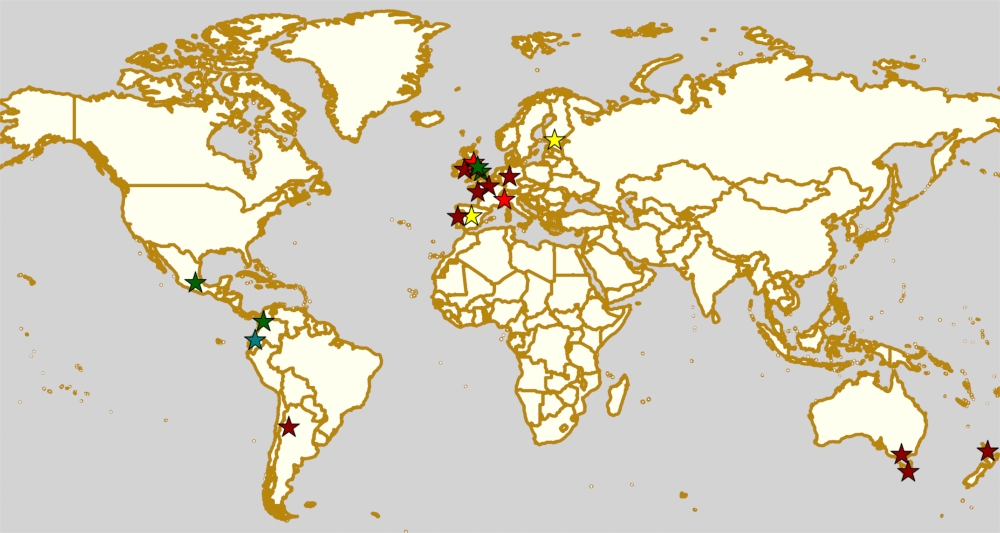

Weekend Highlights: 06 July 2019
This weekend's highlights are back to our two update format.
The rules are, as usual: highlights limited to 1 event per country, with an "extra" event allowed for a different kind of fixture (so, 1 tournament and 1 bootcamp), or if they involve Scottish leagues (since we are the Scottish Roller Derby Blog). Other notability might also allow the extra event - great posters, notable teams, etc. (League birthdays may count as "special" enough, at our discretion ;) )
In a bid to make this list as useful as possible, we've avoided links to Facebook except where noted. (Links to Teams are to non-Facebook resources - Instagram, or actual team pages - we'd strongly recommend that Teams get themselves an actual webpage [we can help host one if you need help]).
There's not one, but two national championships decided this weekend, as the finals of the Finnish National Championships and the first ever ARDE Spanish National Championships both fall here.
Locations are roughly organised East-West (with things before the weekend out sequence at the start).
Sat-Sun: Auckland, New Zealand
Pirate City Rollers host a double header, including junior derby!
- Scallywags (Pirate City J | Auckland) versus Hell Razors (Northern Nightmares J | Whangarei)
- All Scars (Pirate City A) versus Steam Rollers (Sulphur City A | Rotorua)
FTS usually does not track juniors games, so only the second bout is listed
Event starts: 1630 Saturday (doors open)
Venue: The Trusts Arena, 65-67 Central Park Drive, Auckland, New Zealand
Sat: Melbourne, VIC, Australia
East Vic Roller Derby host a double header of roller derby, including Juniors!
- South East Magic Rollers (East Vic J | Melbourne) versus pot luck junior team
- Black Cats versus Snowy Owls [East Vic home teams]
Event starts: 1730 Saturday (first game)
Venue: Knox Regional Netball Complex, 9 Dempster Street, Melbourne, VIC, Australia
Sat: North Hobart, TAS, Australia
Convict City Roller Derby League host a celebration of their 10th Birthday featuring not just 2 games (a rookie game and a home teams game with the original team names from 2010), but also the launch of their new branding, and website!
- Rookie debut game
- Scriminals versus Pick Pocket Rockets ["retro" home teams game]
Event starts: 1800 Saturday (doors open)
Venue: 83 Federal Street, North Hobart, TAS, Australia
Sat: Vantaa, Finland
Roller Derby Finland this season's final of the Finnish National championships. As well as the 4 teams competing in a single elimination for the championship, there will also be an open skate run by Helsinki Coast Quads (the first ever Finnish Men's National Champions, as of this season).
- Teams:
- Oulu Roller Derby
- Dirty River Roller Derby (Turku)
- Queen B (Helsinki Roller Derby B)
- Kinapori Fistfunkers (Kallio Rolling Rainbow B | Helsinki )
Event starts: 0930 Saturday
Venue: Tikkurilan Urheilutalo, Vantaa, Finland
Sat: Kassel, Germany
Kassel Roller Derby host a single header event, against Münster's finest
- Bashlorettes (Kassel) versus Zombie Rollergirls (Münster)
Event starts: 1330 Saturday (doors open)
Venue: Jugendburg Sensenstein, Nieste, Niedersachsen, Germany
Fri: Turin, Italy
Bloody Wheels Roller Derby Torino host a "benefit party", a fundraising party with food, drink, games, and a raffle, supporting both the league itself, and Italian roller derby in general.
Event starts: 1900 Friday
Venue: Casa Arcobaleno, Via Bernardino Lanino 3/A, Turin, Italy
Sat-Sun: Fontenay-aux-Roses, France
[FACEBOOK LINK] [FTS LINK 1] [FTS LINK 2] [FTS LINK 3] [FTS LINK 4] [FTS LINK 5] [FTS LINK 6]
Lutece Destroyeuses host an international 4 team tournament over two days (for a full round-robin) as an end of season event. The Summer Games 2019 features teams from Slovenia, France and Sweden!
- Teams:
- Roller Derby Ljubljana
- Helltown Hellcats (Helsingborg)
- Les Canailles (Lutece B | Paris)
- San Culottes (Paris Rollergirls B)
Event starts: 1000 Saturday (doors open?)
Venue: 7 Rue des Potiers, 92260 Fontenay-aux-Roses, France
Sat: Stamford, UK
Stamford & Peterborough Junior Roller Derby host a "start of summer" bootcamp and scrim, aimed at JRDA Level 2 and 3 skaters.
- bootcamp with Quadnacious D (Borderland Brawlers coach), Bear Skills (Lincolnshire Rolling Thunder)
- black versus white scrim
Event starts: 1200 Saturday
Venue: New College Stamford's Borderville Campus, Ryhall Road, Stamford, UK
Sat: Leeds, UK
London Rollergirls and Double Threat Skates co-host an exciting footwork and jamming bootcamp led by Delta Strike (London Rollergirls, Team England Roller Derby 2018). (Double Threat Skates are also hosting one of their regular pop-up shops in Leeds, in this case, in association with this bootcamp.)
Event starts: 1200 Saturday
Venue: Morley Leisure Centre, Queensway, Morley, Leeds, UK
Sat-Sun: Manchester, UK
Manchester Roller Derby host the final fixture in the British Championships Tier 1 North! With the top sport already taken by Liverpool Roller Birds, it's a battle for second place, and against relegation here. Sheffield Steel, in the bottom spot, cannot avoid relegation in their game against Auld Reekie - but Auld Reekie will need to win impressively to stand a chance of taking the second playoffs place to play for the Championship. That's also only possible if Manchester's Checkerbroads, currently in that second playoffs spot, find neighbours Rainy Revolution too much to handle - a situation which is also the Oldham team's only way out of that second relegation spot!
- Checkerbroads (Manchester A) versus Rainy City Revolution (Rainy City B | Oldham)
- Sheffield Steel Roller Derby versus Auld Reekie Reserves (Auld Reekie B | Edinburgh)
Event starts: 1200 Saturday (doors open)
Venue: University of Salford Sports Centre, University Road, Salford, UK
Thurs: Carlisle, UK
Border City Roller Derby celebrate their 4th Birthday with a Stars v Stripes scrim - participation open to anyone mins-passed (or mins-passed without laps, or almost mins-passed if your coach vouches for you).
Event starts: 2000 Thursday
Venue: Harraby Campus Sports, Carlisle, Cumbria, UK
Sat-Sun: Nantes, France
MRDLA (Mixed Roller Derby from Loire Atlantique) host a Roller Derby Sevens tournament, Le Sevenette! This is an 8 team tournament, with group stages seeding into a single elimination and consolation games. Teams are assigned by the organisers to achieve a close skill level across the tournament.
- We'd guess 2 groups of 4 (12 games) + top 4 single elimination?
Event starts: 0900 Saturday
Venue: Skatepark Le Hangar, 9 allée des Vinaigriers, Nantes, France
Sat: Greystones, Ireland
[FACEBOOK LINK] [FTS LINK] [FTS LINK]
East Coast Cyclones host an international double header, as Rotterdam Roller Derby travel over to play two games.
- Limerick Roller Derby versus Rotterdam Roller Derby A
- East Coast Cyclones (Wicklow) versus Rotterdam Roller Derby B
Event starts: 1200 Saturday
Venue: Shoreline Leisure Greystones, Mill Road, Greystones, Ireland
Sat-Sun: Madrid, Spain
[FACEBOOK LINK] [FTS LINK] [FTS LINK] [FTS LINK]
Roller Derby Madrid host the first ever ARDE Spanish National Championships over this weekend, with both the Men's division (three teams) and the finalists from the WFTDA-gender division qualifiers compete for their respective cups, including a Division 2 cup for the top teams there.
- Teams:
- MRDA-division 1
- MadRiders (Madrid M)
- Lobishomes (Galicia M)
- Easo Hooks (Donostia/San Sebastián M)
- WFTDA-division 1
- Roller Derby Madrid A
- Rayo Dockers (Valencia)
- Ingles de Acero All-Stars (Barcelona A)
- Black Thunders Derby Dames (Madrid)
- WFTDA-division 2
- Roller Derby Madrid B
- As Brigantias (A Coruña)
- Sereas Bravas (Vigo)
- Frankensteam (Salamanca / Bad'n'Roller (Badalona) / Cáceres)
- MRDA-division 1
Event starts: 0900 Saturday (doors open)
Venue: Basico Sport Center, C.D.M Las Cruces, Avda. de los Poblados 72. Madrid, Spain
Sat-Sun: Coimbra, Portugal
Rocket Dolls Roller Derby host the 2019 edition of their European "Quad Cup" tournament, this year featuring teams from Germany, Netherlands and France, as well as the Portuguese hosts. With two days and four teams, the event is run as a round robin tournament with 6 games on the Saturday: the top 2 (and next 2) then playing for 1st (and 3rd) on the Sunday.
- Rocket Dolls Roller Derby (Coimbra)
- Thunderdoms (Dom City B | Utrecht)
- Municorns (Munich B)
- Les Passeuses Dames (La Roche sur Yon)
Event starts: 1100 Saturday (doors open)
Venue: Pavilhão Multidesportos, Dr. Mário Mexia, Coimbra, Portugal
Sat-Sun: Medellín, Colombia
Radical Derby host a bootcamp on Roller Derby and Roller Skating aimed at developing the technical aspects of both sports. This bootcamp is coached by Bogota Bone Breakers' Moonsun. This is part of an initiative which Radical Derby have been loudly promoting recently to develop the skating community in Colombia as a whole.
Event starts: unknown
Venue: Coliseo Carlos, Mauro Hoyos & Skate Park de la 4 sur; Medellín, Antioquia, Colombia
Sat-Mon: La Rioja, Argentina
Roller Derby La Rioja host the second edition of Impakto Mixto, a multi-division Argentine tournament, with WFTDA-gender, MRDA-gender and OTA tiers. This is also the first time you'll see some of the competing teams on track, with Golondrinas Negras playing here for the first time in public. The event will also host a triple-themed officiating + support clinic, coached by Primavera (refereeing), Captain Rex (NSOing), El Espanto (First Aid)!
- WFTDA-gender teams:
- Sarcasticats (Mendoza)
- Team C (2x4 Roller Derby C | Buenos Aires)
- Golondrinas Negras (mixed skaters from across Argentina)
- Brutal FEM (La Rioja)
- MRDA-gender teams:
- INKA RD (exhibition team / pan-Argentina)
- Facones Galacticos (Zona Norte, Buenos Aires)
- Rayo (Tucuman)
- OTA teams (usually mixed league too):
- Mikilos
- Pujllays
- Puma de los llanos
- Velazquads
Event starts: 0800 Saturday
Venue: Catamarca 364, La Rioja, Argentina
Sat: Quito, Ecuador
Forajidas Roller Derby continue their series of open skate recruitment days to build roller derby in Ecuador!
Event starts: 0900 Saturday
Venue: Cumandá Parque Urbano, Av. 24 de Mayo, Quito, Ecuador
Sat: Mexico City, Mexico
EMEXRD and the Asociación Mexicana de Roller Derby co-host a two-day clinic on officiating and skating with Ninja Sassem (former MRDA Officating Director, WFTDA Level 3 certified referee) and Spin Diesel (3 times Team USA Men's Roller Derby skater)!
Event starts: 0900 Saturday
Venue: Deportivo Morelos Delegación Cuauhtémoc, Rivero Y Peralvillo, Mexico City, Mexico